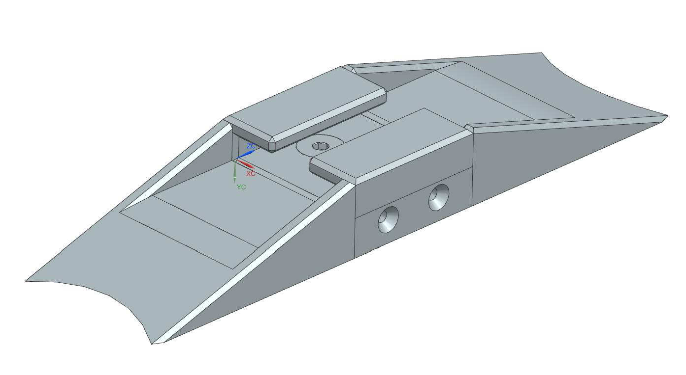
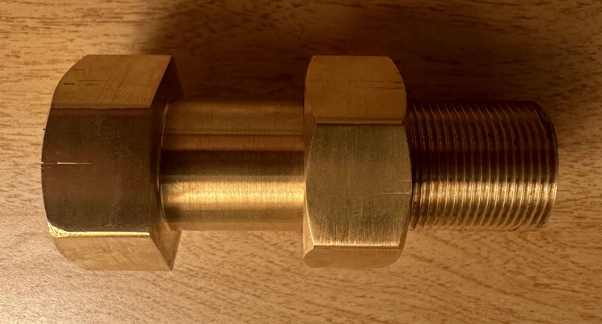
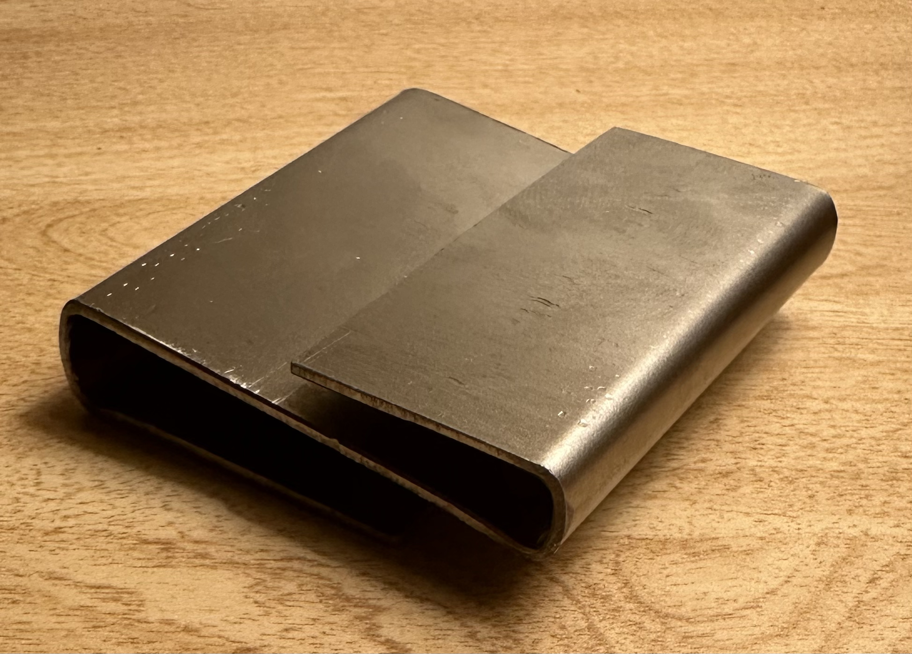

Experience
Industry Experience
Special Missions Design Engineering InternTextron Aviation — 2023Engineered and designed parts for a newly contracted project, developed Excel efficiency documents, and sustained existing projects through engineering drawing improvement. First, I developed engineering efficiency materials in Excel to increase the cadence of engineering drawing release per a tight client schedule. Next, I developed 10 outer mold line parts to be attached to the aircraft for aerodynamic testing. I saw the process from start to finish; I modeled, created engineering drawings, and 3D printed the parts. Finally, throughout the summer, I made sustainment revisions to engineering bills of materials and drawings to support the continuous improvement of past engineering projects.
Research Experience
Undergraduate ResearcherCollege of William & Mary, School of Computer Science — 2022Through the School of Computer Science at the College of William & Mary, I used the Go Programming language to develop Graphical Processing Unit simulation software for statistical analysis. Dr. Yifan Sun and I developed a cycle based simulation tool used to produce crucial computing statistics at both the compute unit and SIMD specific level. In addition, the results create a visual breakdown as a CPI (cycles per instruction) stack to allow for easier performance scrutinization. These results are crucial to continuing the development of GPU and multi-GPU systems; understanding the allocation of resources can help increase computing time and efficiency.
Purdue Involvement
Mechanical Engineer, Lower Airframe Responsible EngineerPurdue Space Program — 2023Purdue Space Program has offered me an incredible opportunity to design, simulate, test, and manufacture critical parts of the Crater Maker Special, a bipropellant rocket aiming for an apogee of 45,000 feet. First, I lead the development of the launch lugs – the interface between the rocket and the rail. The launch lugs were first modeled in NX, simulated in ANSYS, and are now set to be manufactured on the CNC mill. Next, I led the engineering of the scale helium tube testing interfaces; the scale helium tube is a composite structure used to test the carbon fiber structure. In doing this, we designed the assembly in Fusion 360 and manufactured it using the CNC mill and CNC lathe. Third, the largest project I have worked on has been the lower airframe struts. The struts are the structural beams that connect the LOx tank and the engine, house the lower plumbing, and align the fins. The struts were designed using MATLAB and NX, were simulated using ANSYS, and were manufactured on the CNC mill. Finally, I have worked on some smaller projects, including a LOx, strut flange and helium bay ANSYS simulations.



Manufacturing AssistantPurdue Mechanical Engineering Machine Shop — 2023The Purdue Mechanical Engineering Machine Shop is an open workspace for clients to manufacture with mills, lathes, band saws, and other advanced machinery. My job is to aid these processes by assisting with design for manufacturing, equipment usage, and safety. The primary project that I have supported is the Mechanical Engineering Hammer. This project serves as an opportunity to teach students design for manufacturing, order of operations, and basic use of a manual mill and lathe. I have also supported the manufacturing of stock preparation, senior design projects, and other personal projects through mill, CO2 laser, Fiber laser, lathe, and band saw operations. Finally, I have had the opportunity to work on some of my own personal projects as well, including a laundry hook, bedframe table, and a miniature steam engine.


Industrial Relations Team, Director of Industrial RelationsPurdue American Society of Mechanical Engineers — 2023The Purdue ASME is an organization that provides technical projects, professional development events, competitions, and industry connections to students of all majors at Purdue University. As the Director of Industrial Relations, I have worked to lead a team of engineers, facilitate club sponsorship, and manage projects. First, I helped foster relationships with industry professionals to hold virtual information sessions. For example, I connected our organization to a budding aerospace company; we then held a virtual information session to connect ASME members with these professionals. I then helped facilitate the ASME EFx conference – an event held to connect various chapters of ASME together. Next, as part of my project management plan, I created a spreadsheet that is modeled off the Kanban method. The spreadsheet uses Javascript to automate the organization of tasks and help to distribute tasks to the team. This helped our team track industry contacts and helped us stay on track to hit our goals. Finally, I have led a team of Industrial Relations Associates, offering mentorship, pitching advice, and leadership.
Undergraduate Teaching AssistantPurdue University, School of Electrical and Computer Engineering — 2022The Data Science Labs are a set of labs that connect real engineering data and engineering concepts to calculus. As a teaching assistant, I helped to problem solve and resolve any bugs in Python code or issues with PICO circuitry. Through the Data Science Labs, students were led through engineering tasks using Python and Raspberry Pi. My job was to help students complete these tasks; thus, I helped debug software and hardware issues, helped students connect calculus to engineering, and mentored students.
Other
Teacher, Director of CurriculumSteel City Codes — 2021As Director of Curriculum at Steel City Codes, I worked to develop computer science and data science curriculum using Java and Python. In addition, I taught a weekly class and a summer camp with Python and Java. I taught Python and Java weekly classes at various levels of difficulty through Zoom; this included guiding students through basic syntax rules, understanding data structures, and creating basic programs. Following this, as Director of Curriculum, I helped develop learning material for the same weekly classes I had taught. For example, this included the creation of new content for presentation, including Python syntax, debugging slides, and project guidelines.
Personal ProjectsAll TimeProjects of mine over the years.

